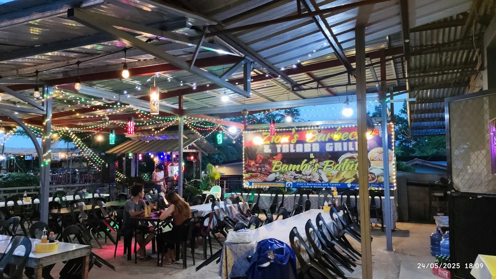
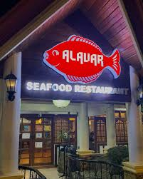
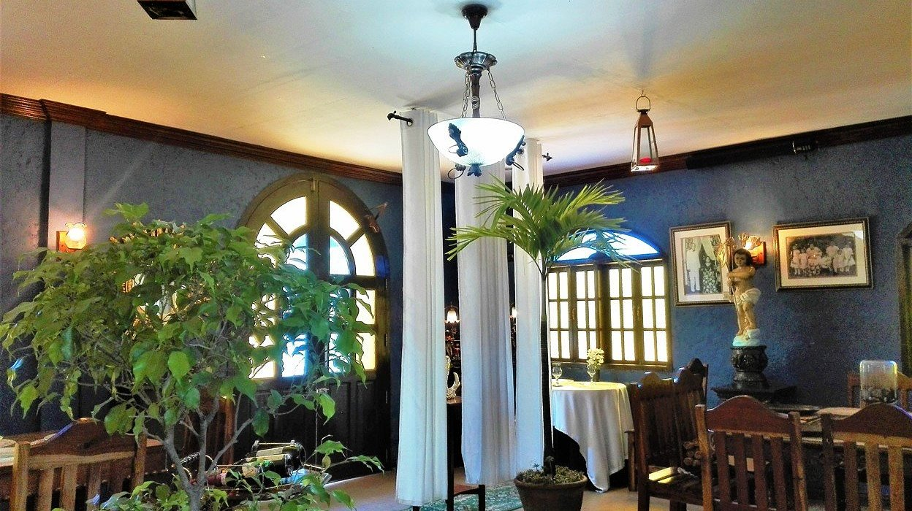

Overview
Culinary tourism in Zamboanga Sibugay is a journey through the freshest seafood and unique Mindanaoan flavors. As the "Talaba Capital," the province offers a gastronomic experience centered around its coastal bounty, traditional markets, and indigenous delicacies.
Visitors can indulge in the famous Sibug-Sibug oysters, explore the diverse dried fish industry, and taste local snacks that reflect the fusion of various cultures in the region.
Popular Culinary Destinations
Zion's Barbecue and Talaba Grills

Located in the heart of Ipil, Zion's Barbecue and Talaba Grills is a legendary stop for both locals and travelers. It is the best place to experience the province's pride: fresh, smoky grilled oysters. Whether you like them with a squeeze of calamansi or paired with their signature barbecue, this spot is the definitive taste of Sibugay.
Alavar Seafood Restaurant

A visit to the region is incomplete without dining at Alavar Seafood Restaurant. Famous for its Curacha (spanner crab) smothered in the secret, world-renowned Alavar Sauce, this restaurant represents the pinnacle of Zamboangueño gastronomy. The rich, coconut-based sauce is a blend of spices that has become a symbol of the peninsula's culinary heritage.
Don Vicente Restaurante Latino

For those seeking a more refined dining experience, Don Vicente Restaurante Latino in Ipil offers a unique fusion of flavors. Known for its elegant Spanish-Latino inspired architecture and diverse menu, it serves everything from premium steaks to classic Filipino favorites, making it a premier destination for food enthusiasts in Zamboanga Sibugay.